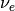
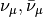
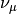
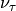
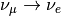
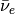
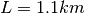
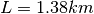

Oscillations¶
Evidence of Oscillations¶
A lot of experiments have been done to research on neutrino oscillations. In summary there are three types,
- Solar neutrinos,
- Reactor and accelerator neutrinos,
- Atmosphere neutrinos.
| Process | Experiments | Notes |
|---|---|---|
| solar  disappearance | ||
| Atm.  disapp. | Super-K | |
 disappearance |
K2K | |
| T2K | ||
| MINOS | ||
 appearance
|
Super-K | |
| OPERA | ||
|  | T2K | |
| MINOS | ||
|  disappearance | Double Chooz |  |
| Daya Bay |  |
|
| RENO |  | |
| disappearance |
|
|
.